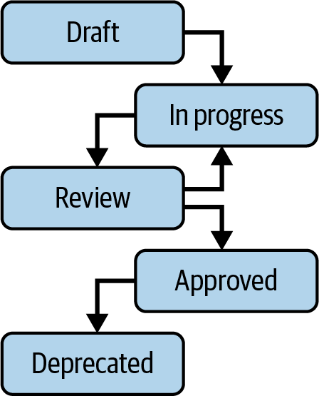
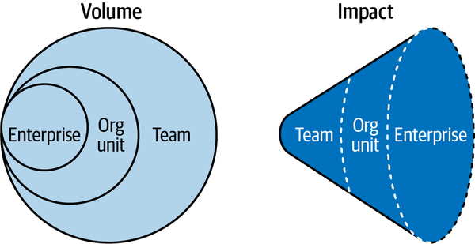
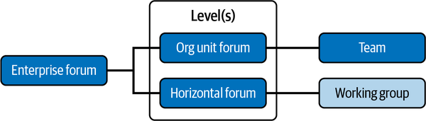
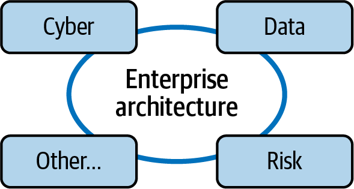
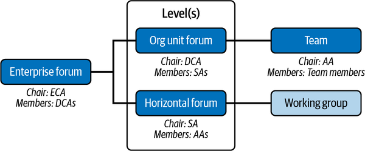
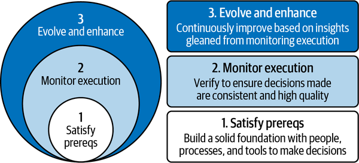
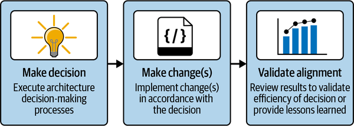

Effective architecture decisions are the heart and center of everything that enterprise architecture does. After all, what is a strategy or an architecture if not the culmination of several architecture decisions?
It is one thing for one team to make good architecture decisions. It is entirely another thing to accomplish this feat at scale—every team, across every organizational unit, making high-quality, consistent architecture decisions. Check out industry guidance from AWS and GCP for more perspectives on why architecture decision records are so important for an enterprise.
To help solve the scaling challenge, this chapter covers a framework that equips decision making with clarity and transparency.
Let’s start with the prerequisites required to apply this framework effectively.
Architecture decision making is a process. A very important process, but nonetheless, a process. A process’s efficiency depends on the tools that support it, the sequence and content of process steps, and the people executing it.
Thus, first let’s take a look at the primary tool needed to support the framework for architecture decision making: the architecture decision registry.
While making the best choice under the circumstances is front and center in architecture decision making, architecture decisions also provide a historical record of the rationale behind them. This record enables any team member or stakeholder, including new ones, to understand what decisions were made and why. To get the most value out of this record, it is important for enterprise architecture to determine what repository solution fits their user needs the best.
For instance, an organization that is used to software practices may prefer to maintain architecture decision records as markup files stored in the source code repositories, accessible from a developer portal. An organization that is used to more traditional documentation may look for a knowledge base or wiki type solution.
The key considerations that factor into the decision of solution selection for a repository include a few that were elaborated in Chapters 2 and 4 as being necessary for any architecture information:
The repository must be easily available to all the end users that need to interact with the architecture decision record.
The repository must be easily searchable for end users to find the specific records that are relevant to them.
As a historical record, the repository must preserve record immutability and provide an auditable record of approvals and timestamps.
Regardless of the specific solution used for the repository, architecture decision records should be immutable once approved to preserve an accurate historical record. That means that in the scenario that something changed and an architecture decision needs to be revisited, a new record should be created with the original one being preserved and deprecated.
Speaking of creation and deprecation, that brings us to the next prerequisite: the process around lifecycle management.
All architecture information has some sort of lifecycle applied from cradle to grave. Figure 14-1 shows the typical lifecycle of an architecture decision record.

The first step is simply to start the architecture decision record as a draft, preferably using a standard template such as the one provided in Chapter 1. This is the shortest step, unless there is contention over who owns the decision to begin with.
The second step is to move the record to in progress, which means adding to the architecture decision documentation with research, data, and feedback.
There is a feedback loop between this step and the next one of review, due to the need to collaborate and iterate on the record based on input from others. This feedback loop can repeat as often as needed to cycle through all the stakeholders that are needed to consult on the decision.
It is during this feedback loop that I recommend finding the stakeholders that are most likely to disagree with your recommendation. They are the ones that ultimately strengthen the decision because they allow you to understand their concerns and proactively assuage them or document the concerns as a risk. Getting alignment may require compromise and remembering that no decision is perfect, it just needs to be good enough based on the information that is known at the time that is captured as assumptions and implications. See Chapters 2 and 3 for more on stakeholder alignment.
The final review is conducted by whomever has the authority to approve the decision. After approval, the decision is completed, until the time that something has changed that either invalidates it or requires a new decision. Either way, this decision’s last step is to deprecate in favor of a new decision; in fact, the link to the new one should be documented as well, in order to allow for traceability.
The specific nature of who has approval authority and steps of approval depend on the architecture decision workflow, discussed in the next subsection.
The architecture decision workflow is what governs the architecture decision-making process.
Since this process shows what leadership roles were involved, it directly affects how they are perceived and impacts perceptions around autonomy.
For instance, an autocratic culture would retain decision-making autonomy only at the most senior levels, resulting in teams needing to wait on others’ directions and acting as directed. In contrast, a culture that is based on empowerment would distribute decision-making autonomy.
Can you guess which cultural philosophy I would prescribe? If you guessed the second one, you are right. I have found that autonomy coupled with right-sized governance works well to encourage the right decisions.
The architecture decision-making process shines the light of truth on empowerment and autonomy; so, consider carefully what statement your decision workflow makes in terms of who is allowed to decide what.
To determine that right-sized governance, it is first necessary to consider that architecture decisions are not homogenous. Figure 14-2 illustrates the degrees of architecture decisions and how they differ.

As shown in Figure 14-2, there are three broad categories of decision makers:
This is a single project, product, platform, or application team.
This is an organizational unit, which may contain many teams.
This is the whole organization, which contains all of the organizational units and all of the teams.
The volume of decisions, indicating frequency and number, is highest at the team level and lowest at the enterprise level. Yet the impact of the decisions made greatly differs. Each decision maker can make a decision that impacts at any broader level.
Teams typically make decisions that only impact themselves. These decisions usually pertain to specific application architecture details such as their high availability deployment architecture or choice of software language. Sometimes, though, their decisions can be more far-reaching. For instance, a team that decided to use an enterprise data warehouse service that pumps it full of data beyond initial projections may very quickly exceed the cost and performance that enterprise service was expecting to deliver. A team that decided to improve their own code quality may influence their org unit to define quality standards for their whole unit.
It is the potential impact of the decision that significantly influences the governance process and approval workflow. Figure 14-3 illustrates an architecture decision-making hierarchy that allows for decisions to be made at different levels based on differing impact.

As shown in Figure 14-3, the team represents the local level. The team is the smallest atomic unit of decision making. Dynamic, ad hoc, cross-functional working groups are a common structure to support multiple kinds of decision-making forums, and they are shown as well.
The middle level is the most nebulous and depends on the specific organizational details. Essentially, this is where in the simplest form it is the main organizational units, such as lines of business. There may be horizontals at this level that stretch across the organizational unit, such as an architecture team or a somewhat centralized site reliability engineering function.
The enterprise-level forum is accountable and responsible for enterprise-impactful decisions, such as a whole new enterprise technology standard. These can also be viewed as horizontals that stretch across all organizational units in terms of their impacts, such as cybersecurity. Figure 14-4 expands on this notion to show how the enterprise architecture governance model needs to include multiple horizontals.

The Other label in Figure 14-4 is a placeholder for whatever other governance forums an organization may have that would need to provide transparency to the enterprise architecture decision-making forums, such as Procurement or Legal.
Each entity in Figure 14-3’s hierarchy has autonomy to make the decisions that are within their scope and impact. Entities on the left have broader scope and impact than entities on the right. Transparency must occur at all levels such that those on the left understand what decisions are made on the right, and vice versa.
Once impact goes beyond a single entity’s impact, the decision is escalated to the broader entity for decision-making power. For example, say a team or horizontal made a decision to use a new third-party vendor that required a whole new connectivity pattern. That decision would get escalated all the way to the enterprise level to ensure that the pattern is valid. On the other hand, if an organizational unit defined greater rigor around technology standards than the enterprise, that would not need any further escalation.
All of these entities are made up of people who are conducting the architecture decision-making process. These people should be trained, which brings us to the last prerequisite: architecture decision training.
Avoid prolonged stalemate by ensuring that each forum has a clear charter with an explicit purpose and chair. That allows the forum to be results-driven in making decisions rather than just having a lot of conversations.
Education is a great aid to empowerment and efficiency. Targeted training is recommended for roles like enterprise chief architect (ECA), divisional chief architect (DCA), solution architect (SA), and application architect (AA). These roles are regularly accountable and responsible for making architecture decisions and may also chair the decision-making forums, as shown in Figure 14-5.

In Figure 14-5’s example, the ECA chairs the enterprise-level architecture forum, which includes representation from DCAs and also should include representation from other horizontal groups as illustrated in Figure 14-4. Each DCA chairs a forum for their own organizational unit. SAs could then chair forums as needed for horizontals related to their architecture domain. Although a team doesn’t formally have a chair, Figure 14-5 shows the AA in that role to note that the AA is accountable for architecture decisions at this level, working in partnership with the team.
Depending on the nature of the forum, partners from business/product and technology groups would be included as stakeholders. The charter for the forum can further elaborate on the roles and responsibilities supporting that forum. In addition, there should be targeted training for partners who need to be involved both in making the decision and in executing against that decision. This training should be part of onboarding for those roles, or if there is no role-based training, part of general onboarding.
Consider tailoring terms from architecture decisions to the broader technology decisions to appeal to business/product and technology partners in the training.
The enterprise architecture function should provide targeted training for all roles to effectively use these forums to identify impactful decisions that need escalation and to make decisions within their own purview. Training should also cover how to use the architecture decision template and repository, along with best practices to include considering nonfunctional requirements (NFRs) for a given decision type. (See Chapter 5 for more details regarding NFRs in decision making.)
With the prerequisites of tooling (accessible and usable repository), process (lightweight lifecycle and governance), and people (training) realized to build a solid foundation for architecture decision making, we are now ready to discuss the actual framework.
The desired outcome of this framework is to scale throughout the entire enterprise to produce consistent, high-quality, transparent decisions.
As illustrated in Figure 14-6, this framework includes three phases that overlap and relate to each other in a continuous, integrated feedback loop:

The first step, satisfying prerequisites, was elaborated upon earlier in this chapter. So let’s move on to the second step: monitor execution.
Each of the prerequisites needs to be monitored to ensure it’s effective. For instance:
Is the repository being used as intended, or are there grassroots alternatives being used to store decision records? Are users happy to use it?
What is the duration of each stage—are there any bottlenecks? Are the feedback loops working as intended?
Is there coverage for all roles involved in the decision-making processes? Are any refreshers needed?
In addition to monitoring the processes of making architecture decisions, you also need to monitor the effect of those architecture decisions once implemented. Figure 14-7 pictures the process associated with monitoring implementation.

As shown in Figure 14-7, once a decision is made, a change or many changes are implemented as a result of that decision. Once these changes are completed, alignment to the original decision needs to be validated, and a quick postmortem should be conducted to review the efficacy of the decision. Was it spot on? If not, why not?
Celebrate successes and treat failures as learning or growth opportunities.
Architecture fitness functions, defined by Building Evolutionary Architectures by Neal Ford et al. (O’Reilly, 2017), have gained traction in recent years as a way to measure and validate alignment. For instance, say you’re looking at an application architecture decision on solution selection for the database, because you were solving for specific data access, consistency, availability, and performance requirements. Once that database is implemented, over time you should be able to get measurements on its usage to validate whether or not it is meeting the requirements as intended.
All of the insights gleaned from monitoring execution are input into the overarching phase of evolve and enhance, discussed next.
Having devoted Chapter 11 to evolution, it should come as no surprise that I have found the ability to evolve and enhance to be crucial to effective scaling in architecture decision-making practices. It takes time, repetition, and incentives to create new habits, and instilling architecture decision-making practices is no different.
Any insights gleaned from monitoring execution should be fed right back into continuous improvement and the strategic OKRs that become a blueprint for effective enterprise architecture in your organization. In addition, these insights can be leveraged into the communication and marketing arm of enterprise architecture to provide customer-centric transparency.
For instance, enterprise architecture tends to walk a fine line between bureaucracy and value-add. Despite best intentions at establishing lightweight governance, imagine that the monitoring reveals that there are bottlenecks based on how a certain decision-making process is being run. Control the message and perception around this pain point to either acknowledge the pain point and show that it will be resolved, or explain why the pain point is necessary due to the risks involved that require such rigor.
When enterprise architecture flourishes, it enables great architecture decisions to be made. This means great architecture decisions that clear the way toward a grand future, a future that is defined by a clear and cogent architecture strategy that marries business goals with technology. And great decisions that meet business goals, make customers happy, reduce risk, proactively drive innovation, and bring people together to work toward shared outcomes.
Architecture decision-making practices get better over time through practice and refinement. Do it, and do it again, and do it better than the time before. This chapter covered the prerequisites needed to build a solid foundation for architecture decision making through proper tools such as an architecture decision repository, streamlined processes around decision lifecycle management and right-sized governance, and strengthening people through training.
Satisfying prerequisites was the first step in the framework for architecture decision making covered in this chapter. The second step was to monitor execution, both of the prerequisites and of the decisions themselves, as they undergo implementation. The third and final step was to evolve and enhance, in the spirit of continuous improvement, using the data-driven insights gleaned from monitoring execution.
This was the last framework in this book. This book has aimed to provide you with the ability to establish an effective enterprise architecture practice, which is essential for a modern organization to thrive using technology to meet business outcomes. While it is my sincere hope that this book has provided helpful frameworks and guidance, effective enterprise architecture is not possible without strong enterprise architecture leadership and unyielding commitment from the senior leadership team to support enterprise architecture.
I can’t say this enough: enterprise architecture, being an enterprise-wide phenomenon, needs the backing of the enterprise, and an influential leader, to be successful. Apathy to enterprise architecture is destructive and must be countered with demonstrated value. Value is both tangible and intangible.
The tangible piece is measurement and relevancy, which is why Chapter 1 started with the value proposition using business terms, and Chapter 2 emphasized metrics. Know your why to inform your what and how, which takes the form of the strategy to establish enterprise architecture, first introduced in Chapter 2, expanded in Chapters 3 through 6, and presented as a framework in Chapter 13. Inform your strategy through an assessment, as covered in Chapter 12.
The intangible pieces of value in this context are perception and caring. Use the principles first introduced in Chapter 7 and elaborated upon in Chapters 8 through 11 to establish a culture that values architecture and the architects who perform architecture.
It is this value that I prize so highly that I now leave you with. Value architecture. Value the practice, and more importantly, value the people.